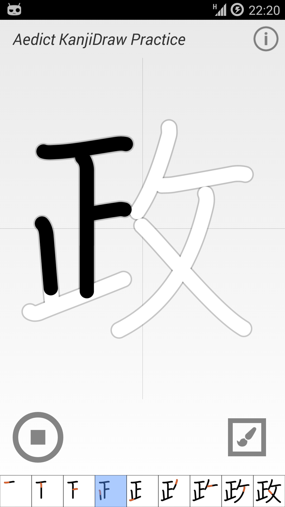
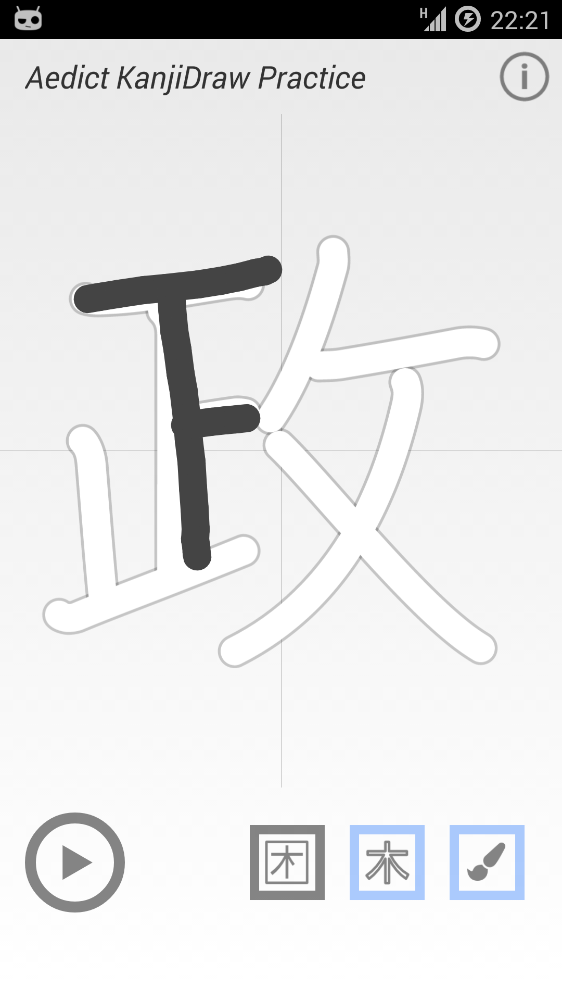
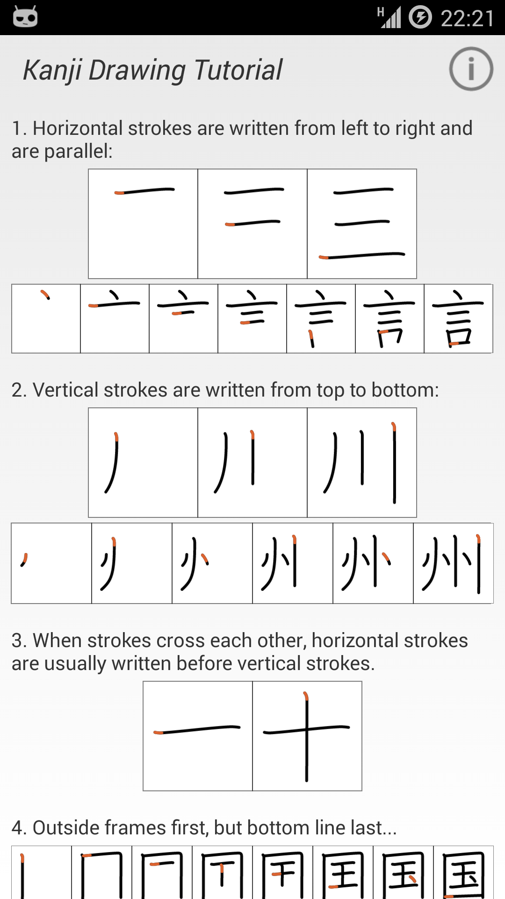

Provides stroke order animation for 7000+ kanjis. You can start the animation either from start, or for the selected stroke.
The app is retired: it is now built into Aedict as Animated Kanjis and comes with the "Aedict Ultimate" subscription. There is nothing extra to install.

You can practise your own kanji drawing. You can show the stroke order diagram and/or the kanji contours, to help to draw the kanji for the first time.

Provides general hints on how to draw the kanji. It does not check the correctness of your drawing.
No user data is collected nor sent anywhere. The Kanji drawings are sent on request to the local Aedict app for analysis.